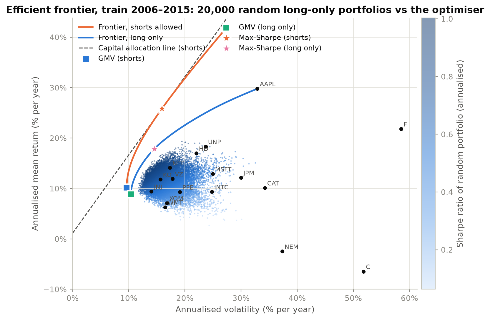
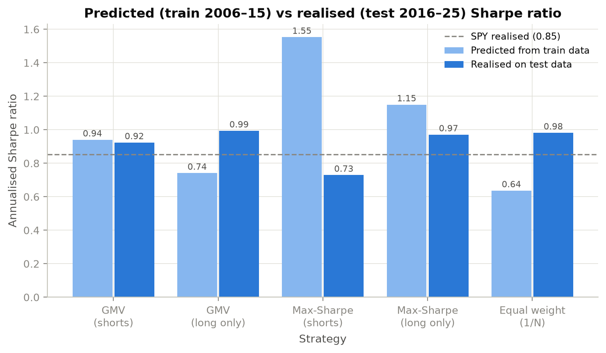
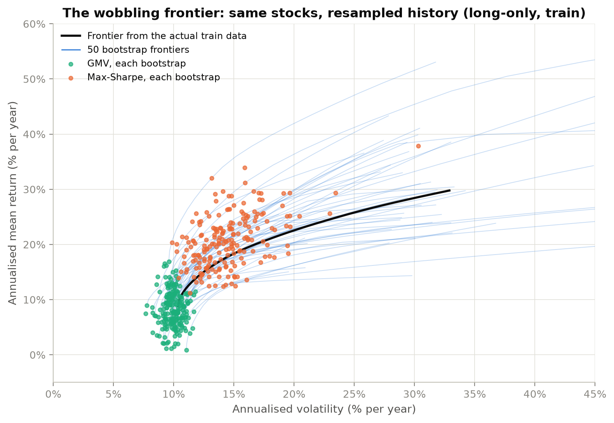
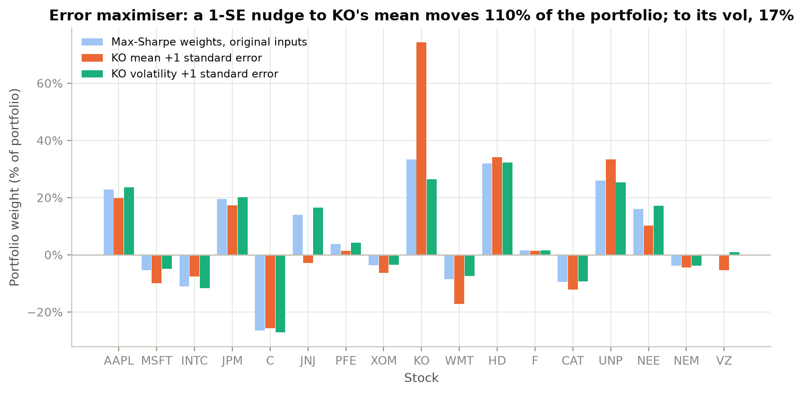
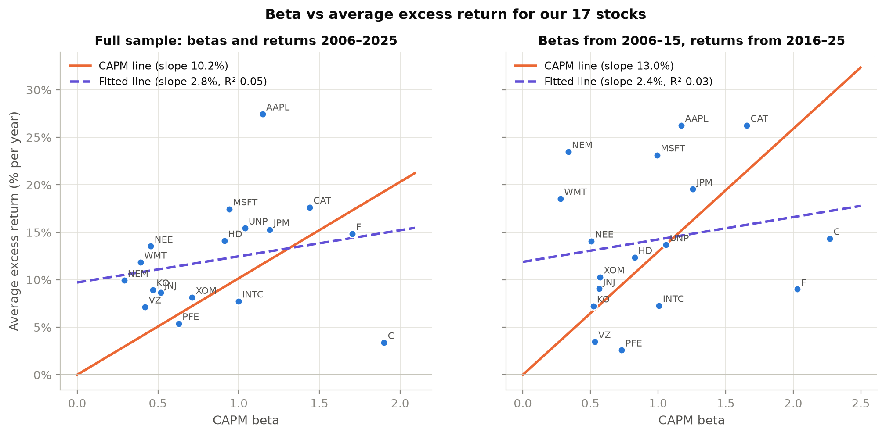
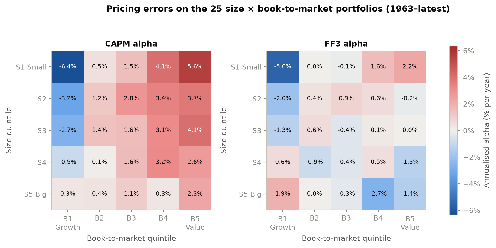
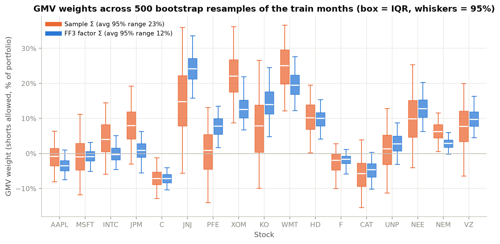
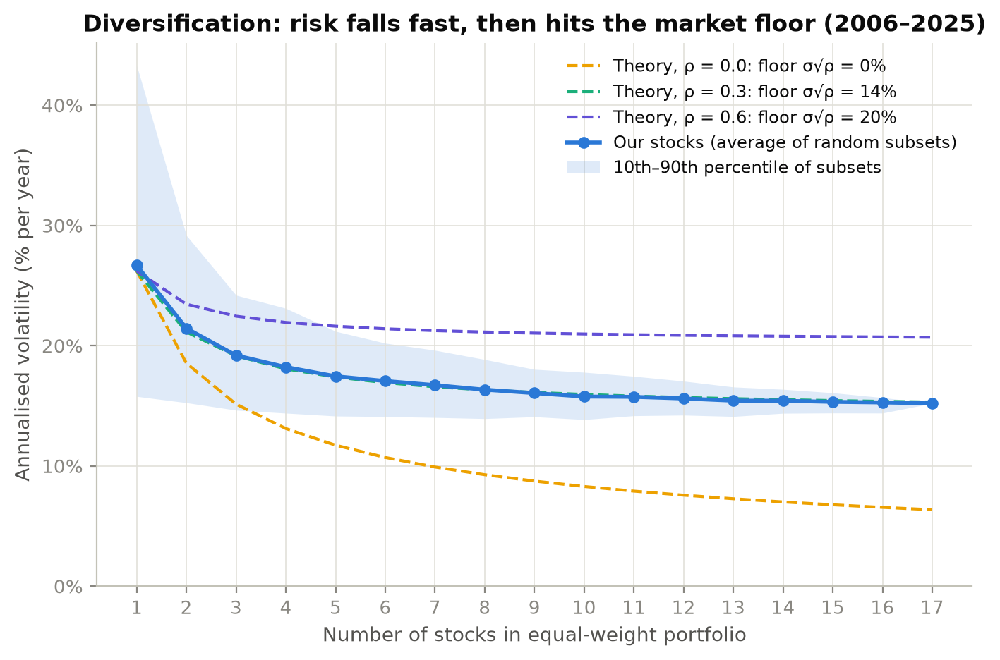
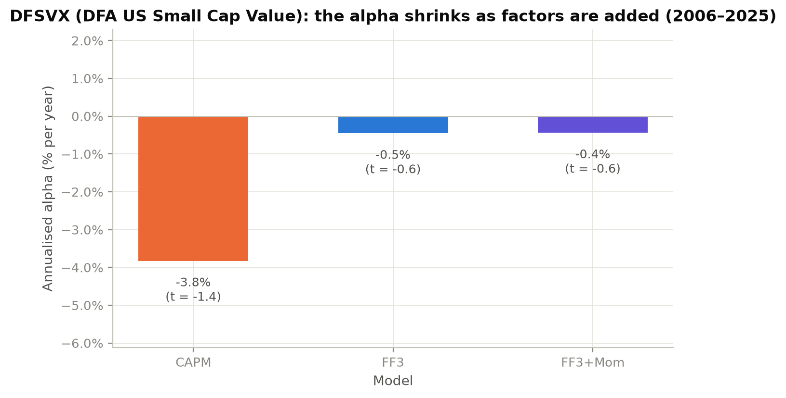
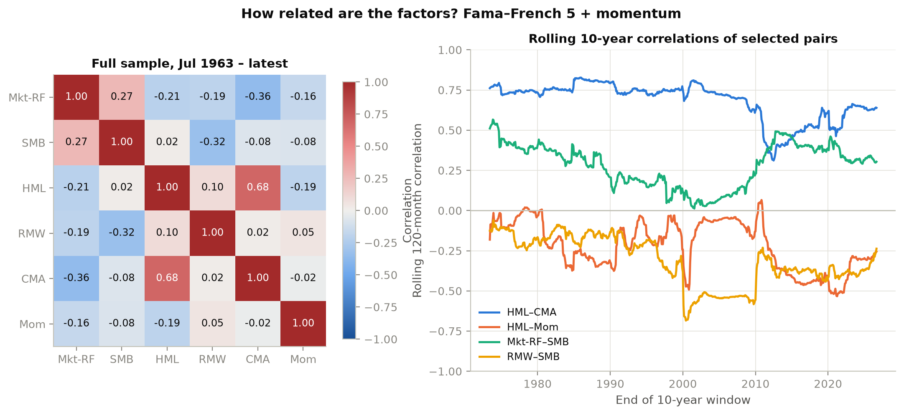

In one paragraph. We built a mean–variance optimiser on 17 US stocks (2006–2025), estimated it on the first ten years and tested it on the second. In sample the maximum-Sharpe portfolio promised a Sharpe ratio of 1.55; out of sample it delivered 0.73, below simply holding all stocks in equal weights (0.98). The cause is estimation error in expected returns: a one-standard-error change in one stock's mean moves 110% of the portfolio. Moving from the CAPM to factor models fixes two things. Factors explain average returns the CAPM cannot (mean pricing error on the 25 size/value portfolios falls from 2.3% to 1.0% a year). Used as a covariance model, they halve the uncertainty in portfolio weights and cut turnover from 30% to 11% a month.
Data. Month-end adjusted closes (dividends and splits included) from Yahoo Finance for 17 stocks across ten sectors: AAPL, MSFT, INTC (tech), JPM, C (financials), JNJ, PFE (health), XOM (energy), KO, WMT (staples), HD, F (discretionary), CAT, UNP (industrials), NEE (utilities), NEM (materials) and VZ (telecom). The mix includes both strong and weak performers over the period (AAPL and MSFT alongside C, INTC, F and PFE). SPY is the market index. The risk-free rate, the Fama–French factors (Mkt-RF, SMB, HML, and the five-factor set), momentum (Mom), and the 25 size × book-to-market and 10 momentum portfolios come straight from Kenneth French's library. The sample is January 2006 – December 2025 (240 months).
Design. Train on 2006–2015, which includes the 2008 crisis; test on 2016–2025, which includes COVID. Anything used to choose weights is estimated on train data only, and an assertion in the code enforces it. As a robustness check we repeat everything with the halves swapped. Checks: no missing months; the correlation of SPY with Mkt-RF + RF is 0.995; Mkt-RF averages 10.2% a year. The five monthly moves beyond ±50% (C and F in 2008–09) were inspected by hand and are real.
How confident are we in the inputs? Not very, for the means. With 120 months, each stock's 95% confidence interval for its annual mean is roughly ±10 to ±30 percentage points, and 10 of 17 include zero. The median standard error is 65% of the mean itself, but only 7% of the volatility; correlations are similarly well pinned (JPM–C: 0.74, 95% CI 0.68–0.81). Means are imprecise because their standard error shrinks only with the length of history (σ/√T), not with sampling frequency. Getting a mean to ±2% with a 20% volatility would take about 384 years. The optimiser nevertheless needs 17 means + 153 covariances = 170 inputs.


The frontier in sample. The optimiser (cvxpy, checked against the closed-form solutions) finds portfolios no random draw can reach (Fig. 1). The shorts-allowed max-Sharpe portfolio promises an annual Sharpe of 1.55, against SPY's 0.47 over the same years. Its weights are extreme: 33% KO, 32% HD, 26% UNP, −27% C, −11% INTC, with gross exposure of 2.4×. It correlates only 0.44 with SPY. Under the CAPM it should look like the market index. It doesn't, because it is chasing noise in the estimated means.
| Strategy (weights frozen from train) | Pred. Sharpe | Real. Sharpe | Real. vol | Max DD | $1 → | Pred. Sharpe (swap) | Real. Sharpe (swap) |
|---|---|---|---|---|---|---|---|
| GMV, shorts allowed | 0.94 | 0.92 | 12.7% | −15% | 3.67 | 1.14 | 0.99 |
| GMV, long only | 0.74 | 0.99 | 12.9% | −15% | 4.06 | 1.04 | 0.77 |
| Max-Sharpe, shorts allowed | 1.55 | 0.73 | 16.6% | −21% | 3.62 | 2.02 | 0.58 |
| Max-Sharpe, long only | 1.15 | 0.97 | 14.9% | −18% | 4.67 | 1.55 | 0.57 |
| Equal weight (1/N) | 0.64 | 0.98 | 14.4% | −20% | 4.53 | 0.98 | 0.64 |
| SPY | — | 0.85 | 15.1% | −24% | 3.95 | — | 0.47 |
Out of sample the promise collapses (Table 1, Fig. 2). Max-Sharpe with shorts realised 0.73, the lowest of all strategies and below 1/N's 0.98. With the halves swapped it promised 2.02 and delivered 0.58, again below 1/N. Averaged over both orderings it misses its promise by 1.13 Sharpe points, while GMV and 1/N miss by under 0.1. Long-only max-Sharpe ended with the most money in the forward test ($4.67), but its Sharpe was no better than 1/N's and it collapsed in the swapped test.


Why: expected returns or covariances? Mostly expected returns. The optimiser is an error maximiser: it overweights stocks whose means were overestimated by luck. Two of our own experiments show this directly (Figs. 3–4). GMV uses no means at all, which is why its predicted and realised risk agree and why it holds up in both orderings. Covariances matter too, but less; Section 4 tests them directly.
Beta on our stocks. Time-series betas (OLS with Newey–West errors, checked by hand as cov/var) range from 0.29 (NEM) to 1.90 (C). Beta barely explains average returns (Fig. 5). The fitted slope is 2.8% per unit of beta against the CAPM's 10.2%, with R² = 0.05. Using betas from 2006–15 to predict 2016–25 returns gives the same picture (2.4% vs 13.0%). This is the "too flat" security market line of Black, Jensen and Scholes. But 17 stocks make a weak test: each average return has a standard error of about 5% a year, and errors in beta bias the slope towards zero. So we turn to diversified portfolios.

Is beta the whole story? French portfolios, July 1963 – September 2026 (759 months). For each portfolio we compare its actual average excess return with the model's prediction (loadings × average factor returns). The difference is the pricing error α. The GRS test checks whether all α are jointly zero.
| Test assets | Model | Mean |α| (ann.) | RMS α | Avg R² | GRS | p-value | GRS 2006–25 | p 2006–25 |
|---|---|---|---|---|---|---|---|---|
| 25 size × B/M | CAPM | 2.32% | 2.83% | 0.73 | 4.17 | <0.001 | 1.87 | 0.009 |
| FF3 | 1.04% | 1.58% | 0.91 | 3.63 | <0.001 | 1.80 | 0.014 | |
| FF3 + Mom | 0.97% | 1.45% | 0.91 | 3.20 | <0.001 | 1.80 | 0.014 | |
| 10 momentum | CAPM | 2.67% | 4.21% | 0.78 | 5.01 | <0.001 | 2.08 | 0.027 |
| FF3 | 3.30% | 5.00% | 0.80 | 5.40 | <0.001 | 1.95 | 0.040 | |
| FF3 + Mom | 1.45% | 1.75% | 0.89 | 3.67 | <0.001 | 2.25 | 0.016 |

Which portfolios does the CAPM get most wrong? The pattern is systematic, not random (Fig. 6). Small value stocks (S1B5) earn +5.6% a year more than the CAPM predicts; small growth stocks (S1B1) earn −6.4%. Past losers (M1) earn −11.1% and past winners (M10) +5.6%. Do the extra factors close the gap? FF3 halves the average error and removes the value pattern; S1B5 falls to +2.2%. That is what one would expect, since SMB and HML are built from size and book-to-market sorts. FF3 does not fix momentum and actually makes it worse (M1 −12.6%), because value and momentum are negatively correlated (−0.19). Adding the momentum factor brings M1 to −3.2% and M10 to +1.2%. Small growth stays mispriced under every model (−5.1%). GRS rejects all three models on the long sample, where T = 759 gives the test the power to detect 1% alphas. On 2006–2025 the statistics are much smaller but still reject at 5%.
On train data only, we regress each stock on the factors to get loadings B and residual variances D, and take ΣF as the factor covariance. We build 1-, 3- and 4-factor versions, add Ledoit–Wolf shrinkage as a benchmark, and rerun the Week 1 test. GMV is the cleanest comparison because it ignores μ. The model's key assumption is that residuals are uncorrelated across stocks. It roughly holds: the average residual correlation is 0.002, against 0.30 for raw returns. It breaks for some pairs, such as JPM–C (0.27) and KO–JNJ (0.30).
| GMV (shorts allowed unless noted) | Sample Σ | FF3 Σ |
|---|---|---|
| Static: realised vol, forward / swap | 12.7% / 11.6% | 12.7% / 11.2% |
| Static long-only: realised vol, fwd / swap | 12.9% / 11.9% | 12.3% / 11.3% |
| Bootstrap: avg 95% range of a weight | 23% | 12% |
| Rolling 60-month: turnover per month | 30% | 11% |
| Rolling 60-month: realised vol 2011–25 | 14.7% | 13.0% |
| Rolling 60-month: realised Sharpe | 0.97 | 0.84 |
| Covariance parameters, N = 17 / 20 / 500 | 153 / 210 / 125,250 | 74 / 86 / 2,006 |
| Max-Sharpe test Sharpe (fwd / swap) | Sample μ | Factor μ | No μ (GMV) |
|---|---|---|---|
| Sample Σ | 0.73 / 0.58 | 0.71 / 0.62 | 0.92 / 0.99 |
| Factor Σ | 0.75 / 0.66 | 0.89 / 0.77 | 0.73 / 0.98 |

Are the weights more stable? Yes, clearly. Each weight's bootstrap 95% range halves (Fig. 7), and when weights are re-estimated every month on a rolling five-year window, turnover falls from 30% to 11% a month. Is out-of-sample risk lower? Where estimation error bites, yes: the rolling GMV's realised volatility falls from 14.7% to 13.0%, and all four structured estimators beat the sample covariance. With a full ten years of data for 17 stocks, the static gain is small: about half a point for long-only GMV and none for shorts. An honest caveat: the lower-risk rolling portfolio also had a lower Sharpe ratio, since GMV targets risk, not return. In the μ/Σ grid (Table 4), changing only μ or only Σ barely helps max-Sharpe; changing both lifts it from 0.73 to 0.89 (and 0.58 to 0.77 swapped). Yet GMV with the sample Σ, which uses no μ at all, is still as good or better. Expected returns are the main problem.
Beyond the figures above, the notebook (Section 8) contains experiments of our own design. Two of them are our best (Figs. 3–4); three more are summarised here and shown in Fig. 8:



1. Because the CAPM leaves systematic pricing errors. If beta were the whole story, average returns would line up with beta. On our 17 stocks they barely do: the slope is one-quarter of the CAPM's and R² is 0.05. On the 25 size/value portfolios since 1963, the CAPM's average pricing error is 2.3% a year, and the errors are organised by characteristics: small value +5.6%, small growth −6.4%, momentum losers −11%. Errors that line up with observable characteristics are not noise. They say the CAPM is missing common sources of return. Adding size and value factors halves the errors; adding momentum fixes the momentum portfolios. Factor models describe why different assets earn different average returns far better than beta alone. They are still not perfect: GRS rejects all of them, and small growth stays mispriced.
2. Because estimating a full covariance matrix does not scale. A mean–variance optimiser needs N(N+1)/2 covariances: 153 for our 17 stocks, 210 for 20, and 125,250 for 500. With 20 years of monthly data (240 months), the sample covariance of 500 stocks cannot even be inverted. A three-factor model needs NK + K(K+1)/2 + N numbers: 74, 86 and 2,006. Fewer, better-estimated parameters mean less estimation error. The model is slightly wrong (biased), since it ignores some residual correlations such as JPM–C, but much less noisy. In our data that trade is worth making: the uncertainty in each GMV weight halves (23% → 12%), and on short windows realised risk falls (14.7% → 13.0%).
3. Because portfolios have to work outside the data they were fitted on. The sample optimiser is an error maximiser. It promised a Sharpe ratio of 1.55–2.02 and delivered 0.58–0.73, losing to equal weights. Factor structure turns the optimiser's inputs from 170 free numbers into a handful of interpretable exposures. Its weights become stable, with turnover falling from 30% to 11% a month, and stable weights mean lower trading costs and fewer bets on noise. Combining a factor-implied μ with a factor Σ is the only version of max-Sharpe in our grid that clearly improves out of sample (0.73 → 0.89; 0.58 → 0.77 swapped).
4. Because factors separate risk from reward, and from skill. A factor can drive how returns move without earning a premium, as SMB has since 1981. A factor model lets us use it for risk (covariance) without betting on it for return. It also lets us ask whether a fund manager has skill: DFSVX's apparent −3.8% CAPM alpha is almost entirely explained by its size and value exposure.
The limits. Factor models do not make expected returns easy to estimate. Even a factor-implied μ depends on noisy factor means, and the best out-of-sample result in our grid still came from GMV, which ignores μ entirely. Factor premia may also be luck or mispricing (size) rather than compensation for risk, which only out-of-sample and post-publication evidence can reveal. Our conclusions are also tied to a 20-year US sample of 17 large companies.
Bottom line. The move from the CAPM to factor models is driven by both empirical failure and practical necessity. The CAPM's single factor leaves predictable pricing errors, and the unrestricted mean–variance approach drowns in estimation error. Factor models address both: they explain more of the cross-section of returns with a few interpretable sources of risk, and they make portfolio construction stable enough to be trusted with real money.
Reproducibility. pip install -r requirements.txt, then
jupyter nbconvert --to notebook --execute notebooks/main.ipynb rebuilds every figure and table from an empty
data/ folder. Fixed seed 251; 500 bootstrap resamples.